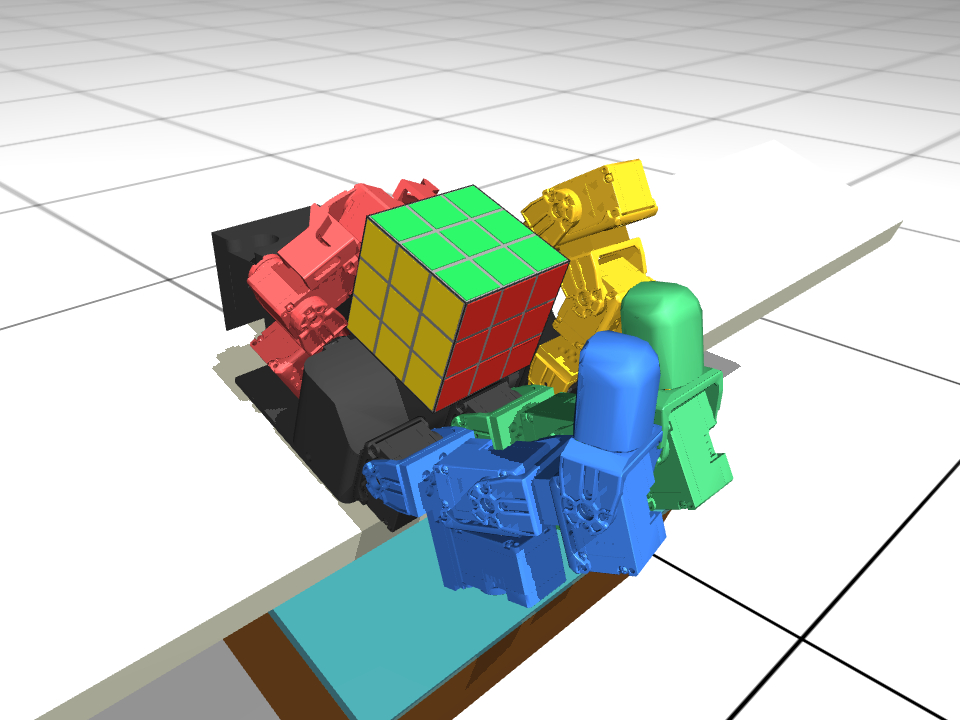
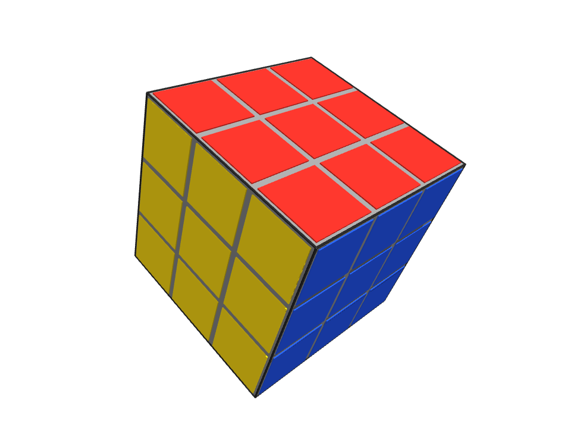
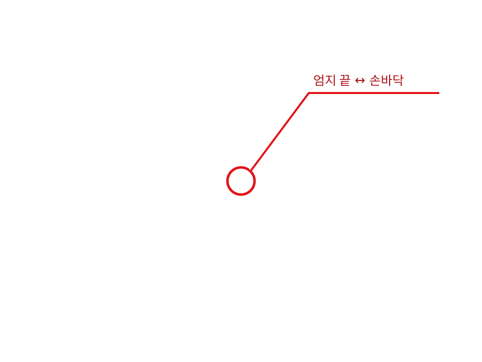
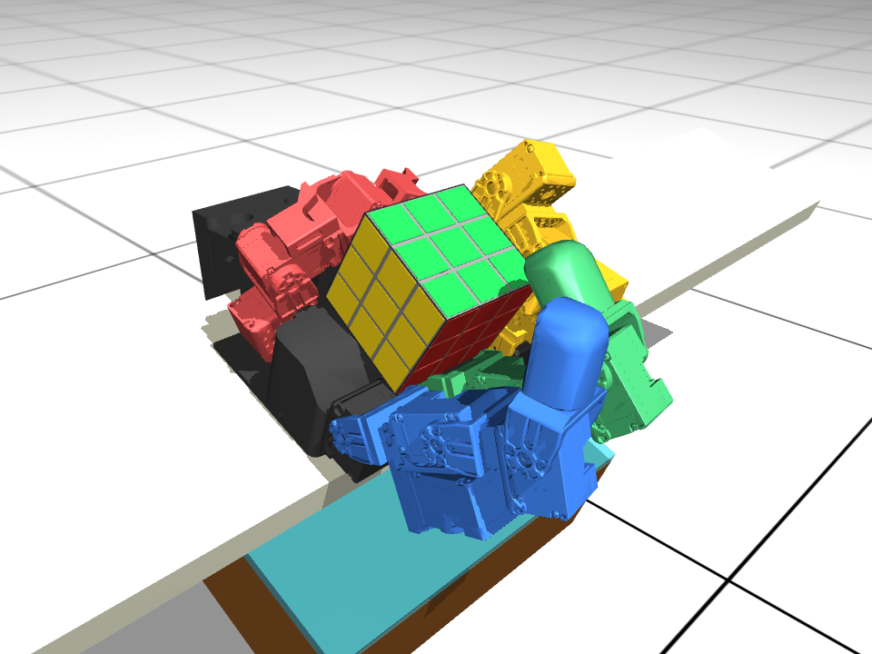
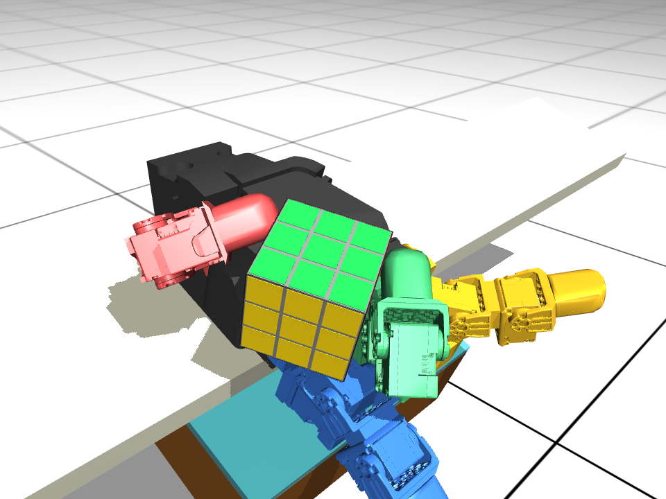

2026-11-11 최신: 약지 앞면 받침·엄지 보정·중간 동작 연결 검토
모두 저장 상태를 그린 시뮬레이션 그림이다. 실제 로봇이나 웹캠은 이번 시험에서 사용하지 않았다. 빨강=엄지, 파랑=검지, 초록=중지, 노랑=약지.
2026-11-10 후속 결과: 이전 첫 회전·유지 통과는 접촉 계산10회 모델의 기록이다. 누락 접촉을 확인해50회 별도 모델로 첫 회전부터 재검증했고 기존 정책은4118목표에서 중단됐다. 같은 명령의50/100회 최종 상태 차이는0이다. 기존 SAC의 보정 학습과 새 초기 배치 검증은 최신 수렴·정책 검증을 따른다. 전체 회전→유지→다음 회전 및 실물 준비 완료가 아니다. 그림과 전체 검증 결과. 아래는 이전 진단의 설명이다.
아래 그림을 만든 진단은 학습의 손바닥 센서 기준점 대신 손 본체 원점을 넣고 있었다. 두 점은 약96.48mm 떨어져 있다. 입력을 수정했고 원래 학습 관측 함수와 최대 약1.01e-7 차이로 일치함을 확인했다. 아래의 기존 결과를 정책 성능의 확정 판정에 쓰지 않는다.
수정 후 같은 저속 비교는 모델8.776초/정책8회 후 추종 오차0.18045rad로 기존 기준에 걸렸다. 그때 시작 대비 약−13.32도였지만 기준 궤적 초기 구간의 중단 상태이며 최종 회전 동작이 완료된 결과가 아니다. 현재 목표는 입력·모델·구동 제약을 맞추고 회전→파지 유지→다음 회전을 연결하는 것이다. 새 학습이나 실물 실행을 완료한 상태는 아니다. 관측 비교 · 수정 후 모델 결과
sac_forward_support_reference_v1_20k/numpy_export/actor.npz의 110입력/16출력 SAC 보정 모델이다. 예전 기준 궤적에 최대0.05rad 보정을 더하도록2만 스텝 학습한 모델이며, 원본 저장소의108입력 policy_np.npz와 다르다.



접촉쌍은 th_tip ↔ palm_collision_4 / palm_collision_8이다. 보고된 겹침은 약0.002mm로 매우 작다. 실제 기구에서 위험한 충돌이 있었다는 증거가 아니며, 현재 모델의 자기 접촉 검사를 통과하지 못했다는 결과다. “중지와 약지끼리 부딪혔다”는 설명은 이 시험에 맞지 않는다.


이 비교에서는 큐브가 목표 반대 방향으로 약13도 기울었고, 다음 정책 목표를 제한된 보정 범위 안에서 충돌 없이 만드는 계산에 실패해 다음 목표를 보내기 전에 멈췄다. 그때 실제 로봇이 충돌한 것도, 이 모델 자세를 실제로 실행한 것도 아니다.
약0.002mm 모델 겹침만으로 동작 불가라고 판단하는 것은 과도했다. 손끝 패드–손바닥 접촉만 최대0.2mm로 구분한 후속 모델 비교에서는 충돌 힘 계산을 유지한 채 약9.038초, 정책8회까지 진행했다. 다만 큐브는 목표 반대 약13.33도, 중심 약12.28mm 이동했다. 마지막 엄지–약지 끝의 약0.00057mm 모델 접촉 판정 역시 실제 위험 충돌을 증명하지 않는다. 초기 접촉 정지를 넘긴 사실과 원하는 방향 회전 미달을 구분한다. 실물 제어 허용치를 바꾼 시험은 아니다. 후속 비교 수치
판단: 옛 학습 정책을 현재 모델에 바로 연결하는 방법과 단순 감속은 검증을 통과하지 못했다. 해결 불가능하다는 결론은 아니다. 현재 모델과 제어 방식에 맞는 정책 보정이 아직 필요한 상태다.